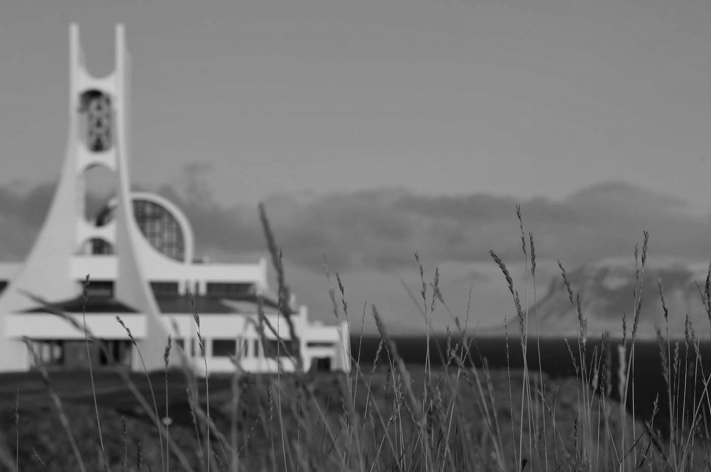
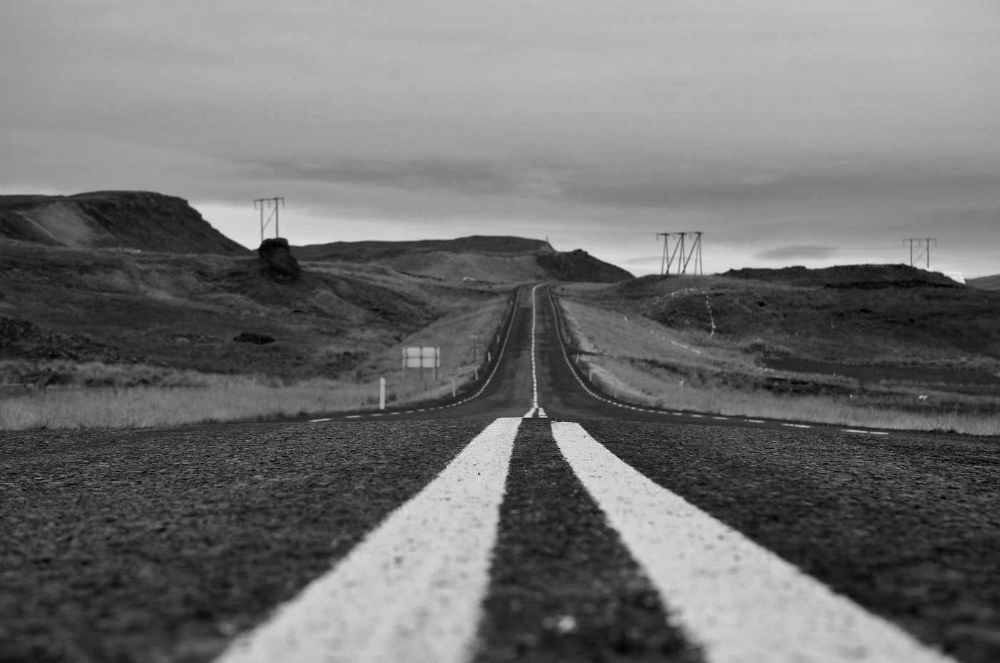
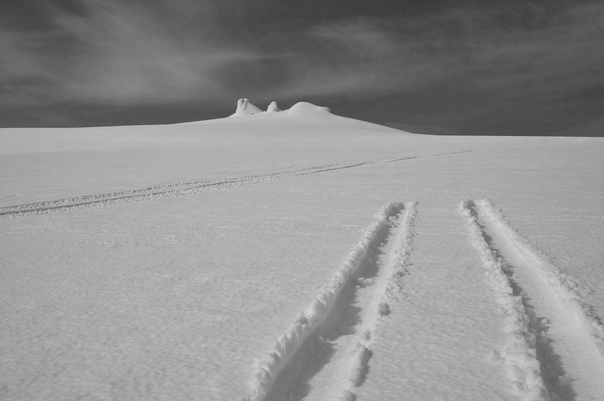
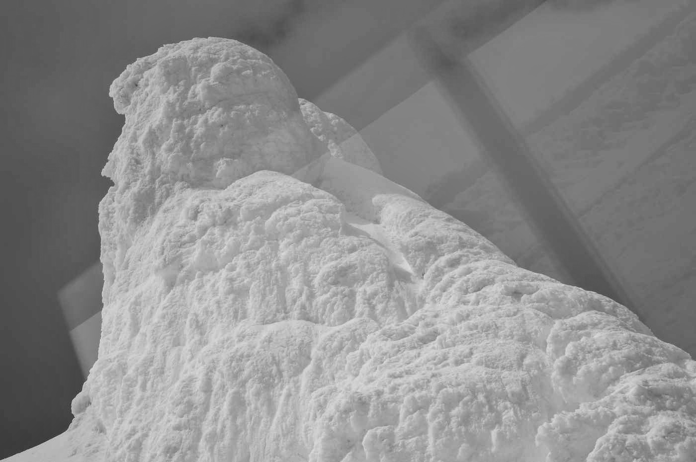

Úvod
Najdete zde mé texty psané na Islandu mezi roky 2017-2025. Některé z nich se jen schovávaly v útrobách mého počítače, jiné doputovaly k lidem, kteří mi byli tehdy blízko. Nyní už patří komukoli, kdo si je chce přečíst.
Prolog
Krajina Islandu má neuvěřitelně léčivý potenciál. Když sleduji její neustálé proměny, jak země a počasí vedou svůj nekonečný dialog; připadá mi, jako bych pozorovala samu sebe zevnitř. Tu část, která je běžnému zraku skrytá. Tu, kterou nikomu úplně nepředáš, i když se snažíš popsat, jak se cítíš. Stejně to nikdy neprožije stejně.
V jednom ze svých vystoupení to trefně vystihl standup komik Jirka Charvát. Říká, že každý z nás je taková individuální nakládačka ve své vlastní zavařovačce. A když se snažíme přiblížit k druhým, jen zoufale narážíme sklem o sklo. Naše prožitky jsou možná nepřenosné, ale můžeme je sdílet. Stejně jako sdílíme krajinu, ve které žijeme.
Lidé, kteří se rozhodli žít na tomto kousku země uprostřed oceánu, mě fascinují stejně jako on sám. Touha po společné krajině vnější do jisté míry předznamenává touho sdílet krajinu vnitřní. Tak jsem to alespoň vypozorovala od lidí, které jsem na cestách potkala. Někteří se stali blízkými přáteli, jiní zůstali jen „Facebook friends“, a pár z nich je v mém životě dodnes.
V jedné malé vesnici na okraji Západních fjordů visí na recepci guesthousu obrázek s textem: „Přátelé jsou jako hvězdy. Nemusíš je dlouho vidět, a přesto víš, že tam někde jsou.“ Na Islandu to platí dvojnásob.
V létě kvůli polárnímu dni hvězdy opravdu neuvidíš. Občas zahlédneš jen bledý obrys měsíce. Když jsem na ostrově trávila své první dny, myslela jsem si, že tady snad měsíc ani nevychází. Bylo neustále zataženo a taky jsem ho hledala na špatné straně oblohy. Až jedné jasné zářijové noci se konečně ukázal a já měla radost, že je tu se mnou taky.
O pár dní později mě uprostřed noci probudila má drahá polovička. Třásla se mnou jako se stromem zralých hrušek, že prý musím něco vidět. Když jsem rozespalá došla k oknu, spadla mi čelist. Přes celou oblohu se vlnilo růžové světlo. Tančilo nad protestantským kostelem ve tvaru labutě, nad horami, fjordy i oceánem.
Potvrdilo se mi, že když je člověk ve správnou chvíli na správném místě, vesmír mu dá znamení. Občas se vyplatí překonat strach, odlepit se od země a někam si zaletět. Nebo něco opustit. Island mě neustále staví do situací, kdy je opuštění nezbytným krokem vpřed.


"To see the world, things dangerous to come to. To see behind walls, to draw closer. To find each other and to feel. That is the purpose of life."
I.
— How high should you get to reach the limb of God?
Nevím, co to zrovna hrálo za písničku. Věděla jsem jen, že je mi povědomá, ale ten moment byl tak jedinečný a pokojný, že jsem ho nechtěla rušit vyhledáváním v telefonu. Ani mě nenapadlo se ho na to později ptát. Patřilo to ke kouzlu okamžiku. Až ten song uslyším znovu, tahle chvíle se mi vybaví naprosto dokonale — ležím na pohodlné matraci na úpatí stratovulkánu Snæfellsjökull. Vyjeli jsme tady s Matthíasem jeho armádním campervanem, nebo jak mu říká Matti: se zeleným jollym.
Poznali jsme se, když jsem před pár měsíci hledala bydlení v Reykjavíku. Zrovna pronajímal malý pokoj - v rychlosti jsem odpověděla na inzerát z Facebooku a pár hodin nato mi zvonil telefon. Myslím, že jsme oba hned věděli, že jsme si sedli a že se brzy uvidíme. Pronájem jsem nakonec nepotřebovala. Místo toho jsem už počtvrté odjela pracovat na poloostrov Snæfellsnes.
„Si tam jezdíš čistit karmu, nebo co?" ptala se mě moje nejbližší přítelkyně Lucia, pilotka žijící v nejseverněji položeném hlavním městě světa. Holt, někdy musíš něco zopakovat stokrát, aby sis konečně uvědomil, že to dělat nechceš...
Propojení mezi mnou a tím ledovcem je evidentní. Pro jistotu jsem si ho na sebe nechala vytetovat. Dvakrát. Nakonec se vždycky rozhoduju srdcem, ale někdy tomu předchází různé peripetie, protože cesta z mozku do srdce může být kolikrát delší než nejdelší pouť světa. A proto teď letím zpátky. Zase musím na chvíli ostrov opustit. Vím, že už navždy tam zůstane půlka mého srdce. Snad proto má srdce dvě komory. Možná není potřeba cítit se rozpolceně.
Filosof Václav Bělohradský tvrdí, že je v dnešní postmoderní době přirozené mít dva domovy, patřit ke dvěma zemím. A já si celou dobu myslela, že vlastně žádný domov nemám. Až teď si uvědomuju, že mám dokonce dva. Stačí se na situaci podívat z jiného úhlu. Tak jako se dívám z jedné země na tu druhou. Na ostrově se zdá moje rodná hrouda tak malebná a romantická. A po určité době mi vždy začne chybět.
Nebudu se měnit jen proto, že to druzí očekávají. Nebudu mít výčitky, že jsem se nerozloučila. Se všemi se zase stejně uvidím. Stejně jako jsem je viděla už předtím, ve snech, v představách, ve vizích... Tomu, že čas je lineární, jsem přestala věřit už dávno. Naše minulost nás často dožene právě v budoucnosti. Obzvlášť ta nevyřešená.
Knihu Cestovat nalehko od Tove Jansson jsem věnovala kolegyni z hotelu, Veronice. Ta se rozhodla, že bude putovní a až ji dočte, přenechá ji někomu dalšímu. Knížku s tímhle názvem u sebe opravdu mít nemůžu, když s sebou táhnu do Čech nejméně pět přecpaných zavazadel.
„Sometimes what we're looking for is right in front of us" — odrecitovala jsem cizinci, který zoufale hledal zásuvku v letištní hale — a přitom seděl přímo vedle ní. Věděla jsem, že ze mě vyšlo naprosté klišé. Přesto jsem měla pocit, že se nad ním mám pozastavit. A to hned. Zadívala jsem se tedy před sebe a začala pozorovat dění kolem.
Letištní hala v Keflavíku. Lidi se většinou courají sem a tam, a to je na letištích fajn. Málokdy je někdo ve spěchu. Obzvlášť po návštěvě Islandu, kde čas začne plynout o trochu pomaleji. Bavilo mě je sledovat — jak jsou oblečení, jaké mají výrazy. A napadlo mě, o kolik jsou pro mě tihle lidé reálnější než postavy v knize nebo filmu.
O pár minut později kolem mě prošla skupinka letušek. S jednou jsem navázala oční kontakt, spontánně na ni mrkla a ona se usmála. Nevím, proč jsem to udělala. Nevím, kdo v těchto momentech řídí můj mozek, ale někdy mám pocit, že já to nejsem. Jako by byl už přednastavený. Právě v takových chvílích mám pocit, že žiju v nějaké simulaci. A děje se to čím dál častěji.
Taky ale vím, že realita je subjektivní. Odráží to, čemu věříme a čemu věnujeme pozornost. Je to taková moje sebedokazující teorie o tom, že život se odvíjí sám od sebe, jako krajina za okny starého armádního campervanu. Nepotřebujeme se držet mapy - kompas má každý z nás uvnitř sebe, jen ho stačí přestat hledat někde jinde.

